本文为翻译文章，点击查看原文。
运营容器化基础设施给我们带来了一系列新的挑战。您需要对容器进行测试，评估您的 API 端点性能，并确定您的基础架构中的不良的组件。Istio 服务网格可在不更改代码的情况下实现 API 的检测，并且可以自由的设置服务延迟。但是，我们该如何理解所有这些数据？用数学的方式，对，就是这样。
Circonus 是 Istio 的第一个第三方适配器。在 之前的文章中，我们讨论了第一个用于监视基于 Istio 的服务的 Istio社区适配器。这篇文章将对此进行扩展。我们将解释如何全面了解您的 Kubernetes 基础设施。我们还将解释如何为基于容器的基础架构增加 Istio 服务网格实现。
Istio 概述
Istio 是 Kubernetes 的服务网格，这意味着它负责所有服务之间的通信和协调，就像网络路由软件为 TCP/IP 流量所做的一样。除了 Kubernetes 之外，Istio 还可以与基于 Docker 和 Consul 的服务进行交互。与 LinkerD 相似，Istio 已经的出现已经有很长时间了。
Istio 是由 Google、IBM、思科和 Lyft 的 Envoy 开发的开源项目。该项目已经有一年多的历史了，而 Istio 已经进入了大规模生产环境（有案例吗？译者注）。在这篇文章发布时，当前版本为 0.8。
那么，Istio 是如何融入Kubernetes 生态系统的？Kubernetes 充当数据层，Istio 充当控制层。Kubernetes 承载应用程序流量、处理容器编排、部署和扩展。Istio 路由应用程序流量，处理策略执行，流量管理和负载均衡。它还处理遥测，如指标、日志和跟踪。Istio 是基于容器的基础设施中负责保护微服务和报告的部分。
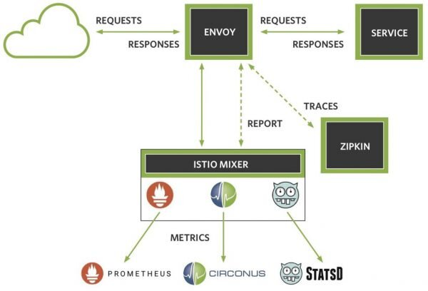
上图显示了服务网格架构。Istio 为每项服务部署了一个 envoy sidecar proxy。Envoy 通过 gRPC 调用代理到 Istio Mixer 服务的入站请求。然后，Mixer 应用流量管理规则，并联合请求遥测。Mixer 是 Istio 的大脑。运维人员可以编写 YAML 文件来控制 Envoy 如何重定向流量。他们还可以指定监测信息推送和可观测性系统的遥测技术。可以在运行时根据需要应用规则，而无需重新启动任何 Istio 组件。
Istio 支持多种适配器将数据发送到各种监控工具。包括 Prometheus、Circonus 或 Statsd。您也可以同时启用Zipkin 和 Jaeger 追踪。而且，您可以把可视化所涉及的服务生成图形。
Istio 易于部署。回想起来，大约7到8个月之前，我们还必须通过一系列 kubectl 命令才能将 Istio 安装到 Kubernetes 集群上。虽然你仍然可以这样做，但是现在我们还可以在 Google Cloud platform，只需点击几下鼠标即可部署启用了 Istio 的Kubernetes 集群，其中包括监控、跟踪和示例应用程序。您可以快速的部署 Istio，然后使用 istioctl 命令来操作。
另一个好处是我们可以从服务中收集数据，而不需要开发人员对服务进行测试才能提供数据。这有很多好处。这减少了维护的工作量，消除了代码中的失败点。这样可以提供了供应商不可知的接口，减少了与供应商绑定的机会。
借助 Istio，我们可以部署不同版本的服务并加权它们之间的流量。Istio 本身使用多个不同的 pod 来操作，如下所示：
> kubectl get pods -n istio-system
NAME READY STATUS RESTARTS AGE
istio-ca-797dfb66c5 1/1 Running 0 2m
istio-ingress-84f75844c4 1/1 Running 0 2m
istio-egress-29a16321d3 1/1 Running 0 2m
istio-mixer-9bf85fc68 3/3 Running 0 2m
istio-pilot-575679c565 2/2 Running 0 2m
grafana-182346ba12 2/2 Running 0 2m
prometheus-837521fe34 2/2 Running 0 2m
Istio 不完全是轻量级的。Istio 的强大功能和灵活性来源于一些运维成本。但是，如果您的应用程序中包含多个微服务，那么您的应用程序容器将很快超过系统配置的容器。
服务级别目标（SLO）
服务级别目标（SLO）的简要概述将为我们衡量服务的健康状况奠定基础。服务级别协议（SLA）的概念已经存在了至少十年了。但直到最近网上关于服务级别目标（SLO）和服务级别指标（SLI）相关的内容数量才迅速增加。
除了著名的 Google SRE书以外，两本关于 SLO 的新书即将发布。“站点可靠性工作手册”有关于 SLO 的专门章节，Seeking SRE 中有关于由 Circonus 创始人兼首席执行官 Theo Schlossnagle 定义 SLO 目标的章节。我们还建议观看Seth Vargo 和 Liz Fong Jones 的 YouTube 视频 “SLI、SLO、SLA，我的天呐！”，以深入了解 SLI、SLO 和 SLA 之间的差异。
总结一下：SLI 驱动 SLO，通知 SLA。
服务级别指标（SLI）是衡量服务健康状况的指标。例如，我可以有一个 SLI，它表示在过去 5 分钟内，我的 95% 主页请求延迟应小于 300 毫秒。
服务级别目标（SLO）是 SLI 的目标或指标。我们采用 SLI，并扩展其范围以量化我们期望的服务在战略时间间隔内执行的情况。使用前面例子中的 SLI，我们可以说，我们希望满足 SLI 为后续年份窗口设置的标准的 99.9％。
服务级别协议（SLA）是企业与客户之间的协议，定义了未能满足 SLO 的后果。一般来说，您的 SLA 所依据的SLO 将比您的内部 SLO 更宽松，因为我们希望内部面向的目标比我们的外部目标更为严格。
RED 仪表板
SLI 的哪些组合最适合量化主机和服务健康状态？在过去几年中，出现了一些新兴的标准。最高标准是 USE 方法，RED 方法和 Google SRE 手册中讨论的“四个黄金信号”。
Brendan Gregg 介绍了 USE 方法，该方法旨在根据利用率、饱和度和错误指标量化系统主机的健康状况。对于像CPU 这样的产品，我们可以将用户、系统和闲置百分比作为常见的利用率指标。我们可以使用平均负载量和运行队列进行饱和度的判定。UNIX perf 分析器是测量 CPU 错误事件的好工具。
Tom Wilkie 几年前介绍了 RED 方法。我们使用 RED 方法监控请求率、请求错误和请求持续时间。Google SRE 手册讨论了如何使用延迟、流量、错误和饱和度指标。这些“ 四个黄金信号 ”以服务健康为目标，与 RED 方法类似，但它添加了饱和度指标。在实践中，可能难以量化服务饱和度。
那么，如何监控容器？容器是短暂实体。直接监视它们来辨识服务的健康状态会带来许多复杂问题，例如高基数问题。综合监控这些容器的服务输出会更容易和更有效。如果服务是健康的，那么不必在乎单个容器是异常。服务编排框架可能将这个容器驱逐，并用新的容器取而代之。
我们思考下如何把 Istio 的 SLI 集成到 RED 仪表板。为了组成我们的 RED 仪表板，我们来看看 Istio 提供的遥测记录：
- 请求按响应代码计数
- 请求时长
- 请求大小
- 响应大小
- 连接收到的字节
- 连接发送字节
- 连接时间
- 基于模板的元数据（度量标签）
Istio 提供了有关它收到的请求，产生响应的延迟和连接级别数据的几个指标。请注意上面列表中的前两项；我们希望将它们包含在我们的 RED 仪表板中。
Istio 还赋予我们添加度量标签的能力，这就是所谓的尺寸。因此，我们可以通过主机、集群等来分解遥测 。我们可以通过获取请求计数的一阶导数来获得每秒请求的速率。我们可以通过请求不成功的请求计数的导数来获得错误率。Istio 还向我们提供每个请求的延迟，因此我们可以记录每个服务请求完成的时间。
另外，Istio 为我们提供了一个 Grafana 仪表板，它包含我们想要的部分：
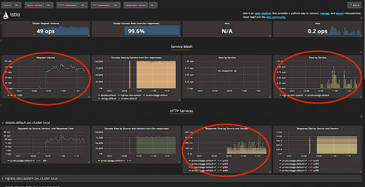
我们想要的组件在上面的屏幕截图中以红色圈起来。我们在左上角的每秒操作请求率，右上角的每秒失败请求数，以及底部的响应时间图。这张图上还有其他几个指标，但让我们仔细看看我们圈出的那些指标：
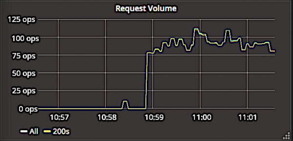
以上屏幕截图显示了仪表板的速率组件。这非常简单。我们计算返回 200 响应代码的请求数，并绘制一段时间内的速率图。
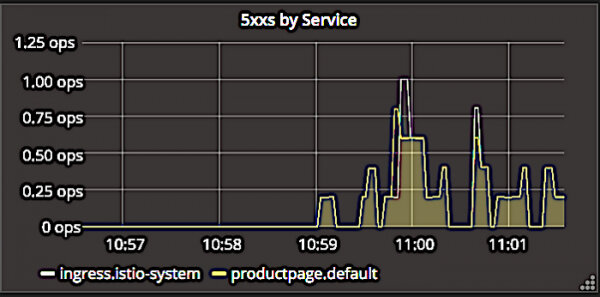
Istio 仪表板为返回 5xx 错误代码的响应做了类似的操作。在上面的屏幕截图中，您可以看到它如何通过 ingress controller 或 productpage 页面本身的错误来分解错误。

该屏幕截图显示了请求持续时间图。此图是关于我们服务的健康状况的最丰富信息。这些数据由 Prometheus 监测系统提供，因此我们可以看到请求时间百分点，包括中位数，第90,95和第99百分位。
这些百分比为我们提供了服务如何执行的全面指示。但是，这种方法存在一些值得研究的缺陷。在低活动期间，由于样本数量有限，这些百分位数可能会大幅偏离。这可能会误导您关于这些情况下的系统性能。我们来看看这种方法可能出现的其他问题：
时间周期问题：
- 百分位数是固定时间窗口上的聚合指标。
- 集群健康无法重新汇总百分位数。
- 百分位不能被平均（这是一个常见的错误）。
- 这种方法存储的聚合是输出，而不是输入。
- 用这种方法测量集群 SLI 是很困难的。
百分位数通常比平均数提供更深的洞察力，因为它们用多个数据点而不是一个数据点来表示数值范围。但是像平均值一样，百分位数是一个汇总指标。它们是针对固定数据集在固定时间窗口上计算的。如果我们计算一个集群成员的持续时间百分比，我们不能将其与另一个集群成员合并，以获得整个集群的聚合性能指标。
普遍的误解是百分位可以被平均；除非产生它们的分布几乎相同的极少数情况除外。如果你只有百分位，而不是源数据，你不知道可能是这种情况。这是一个鸡生蛋还是蛋生鸡的问题。
这也意味着，如果您仅针对单个集群成员衡量基于百分比的性能，则由于缺乏可合并性而无法为整个服务设置服务级别指示符。
由于在固定的时间窗口内只有4个延迟数据点，因此我们设置有意义的 SLI（以及因此，有意义的 SLO ）的能力在此处受到限制。因此，当您使用基于百分位的持续时间指标工作时，您必须问自己，您的 SLI 是否真的有很好的 SLI。通过使用数学推算来确定 SLI，我们可以做得更好，从而全面了解服务的性能和健康状况。
直方图计量数据
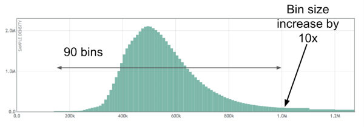
上图是使用直方图以微秒为单位显示服务延迟数据的可视化表示。样本数量位于 Y 轴上，样本值（在本例中为微秒等待时间）位于 X 轴上。这是我们在 Circonus 开发的开源直方图。（请参阅 C 语言 和 Golang 中的开源代码，或者在此处阅读有关直方图的更多信息）还有一些开源的直方图实现，如 Ted Dunning 的 t-消化直方图和 HDR 直方图。
Envoy 项目最近采用了 Circonus 的对数线性直方图库的 C 语言实现。这使得 envoy 数据可以作为分布来收集。他们在实现过程中发现了一个非常小的错误，Circonus 非常乐意修复。这就是开源的美妙之处，由于有更多的人可以查看代码，更多的人可以发现问题，并修复问题，随着时间的推移代码将会越来越好。
直方图可合并。只要边界相同，任何两个或更多的直方图都可以合并。这意味着我们可以将此分布与其他分布结合起来。可合并度量对于监控和可观察性非常有用。这允许我们合并来自类似资源的输出，例如服务成员，并获得总体服务指标。
如上图所示，此对数线性直方图中包含每个幂为 10 的 90 个间隔。您可以看到 10k 到 1M 之间分布的 90 个间隔。在每个 10 的幂下，间隔的大小增加 10 倍。这使得我们能够以高相对精度记录各种各样的值，而不需要提前知道数据分布。让我们看看当我们覆盖一些百分点时，这看起来像什么：
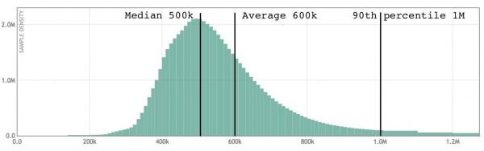
现在您可以看到我们的平均水平，第 50 百分位（也称为中位数）和第 90 百分位。第 90 百分位是 90％ 样本低于该值的值。
考虑我们之前的示例 SLI。通过以此格式显示延迟数据，我们可以通过将直方图合并为一个 5 分钟的数据视图，然后计算该分布的第 90 百分位数值，轻松计算服务的 SLI。如果它少于1,000毫秒，就达到了我们的目标。
上面截图中的 RED 仪表盘持续时间图有四个百分点，第50、90、95和99百分位。我们也可以覆盖这些分布的百分位数。即使没有数据，我们也可以看到请求分布看起来很粗略的表示，但是这会做出很多假设。我们看看仅基于几个百分点的假设如何误导我们，这是其他模式的分布：
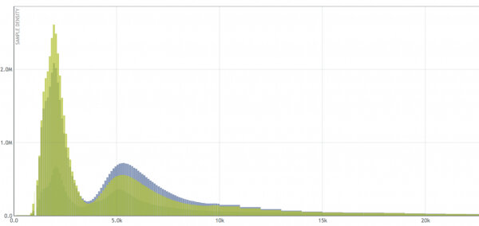
该直方图显示具有两种不同模式的分布。最左边的模式可能是由于缓存服务而产生的快速响应，以及来自磁盘的正确模式。仅仅使用四个百分点来衡量延迟就几乎不可能辨别出这样的分布。这给了我们一个百分点可以掩盖的复杂性的感觉。考虑具有两种以上模式的分布：
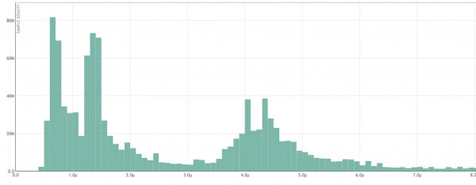
此分布至少有四种可见模式。如果我们对全分布进行数学运算，我们会在这里找到 20 多种模式。您需要记录几个百分位以接近上面的延迟分布？关于下面的分布会怎么样？
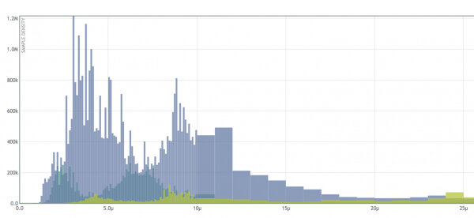
由许多服务组成的复杂系统将生成无法用百分位准确表示的延迟分布。您必须记录整个延迟分布才能充分表示它。这是将数据的完整分布存储在直方图中并根据需要计算百分位数的优选原因之一，而不是仅存储几个百分点。
这种直方图可视化显示了固定时间窗口上的分布。我们可以存储多个分布，以了解它随时间变化的情况，如下所示：
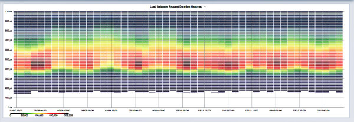
这是一个 heapmap，它代表一组随时间变化的直方图。想象一下，这个热图中的每一列都有一个从上面看的单独的条形图，颜色用于指示每个间隔的高度。这是来自 10 个负载均衡器集群的响应延迟的 grafana 可视化。这使我们能够深入了解整个集群的系统行为，一周之内就有超过 100 万个数据样本。这里的中位数大约在 500 微秒左右，以红色带表示。
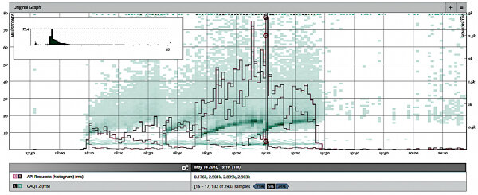
以上是另一种类型的热图。此处，饱和度用于指示每个间隔的“高度”（颜色越深的色块更“饱和”）。此外，这次我们在 heatmap 上覆盖了一段时间内的百分比计算。百分位数是健壮的性的度量标准，非常有用。我们可以在这里看到，随着延迟分布向上移动，90％ 以上的百分位数是怎样增加的。
让我们来看看这些基于分布的持续时间图，看看我们是否可以生成比 Istio 仪表板样本更多的信息：
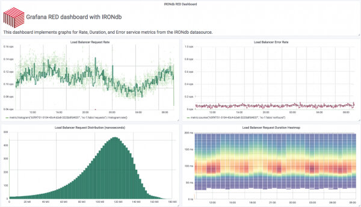
上面的屏幕截图是修改后的 RED 仪表板，显示基于分布的延迟数据。在左下角，我们显示了一个固定时间窗口上的延迟直方图。在它的右边，我们使用热图将分布分解成更小的时间窗口。利用 RED 仪表板的布局，我们可以通过几个小组信息全面了解我们的服务是如何运作的。这个特定的仪表板是使用 Grafana 实现的，使用 IRONdb 时间序列数据库服务，该数据库本地存储延迟时间数据作为对数线性直方图。
我们可以进一步扩展这个 RED 仪表板，并将 SLI 覆盖到图表上：
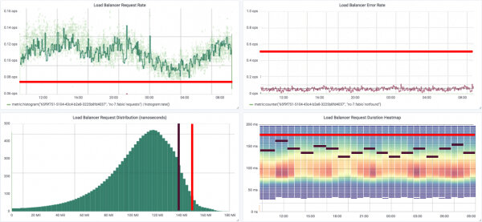
对于速率面板，我们的 SLI 可能会保持每秒最低水平的请求。对于速率面板，我们的 SLI 可能会保持每秒一定数量的错误。正如我们之前研究过持续时间 SLI，我们可能希望整个服务的第 99 个百分点由多个窗格组成，以在固定窗口内保持一定的延迟。使用存储为直方图的 Istio 遥测技术可以让我们设置这些有意义的服务范围的 SLI。现在我们还有很多工作要做，而且我们可以更好地审问我们的数据（见下文）。
提出正确的问题
所以现在我们已经把这些部分放在一起，并看到了如何使用 Istio 从我们的服务中获取有意义的数据，让我们看看我们可以回答哪些问题。
我们都喜欢解决技术问题，但不是每个人都有同样的重点。业务人员想回答关于业务的问题。您需要能够回答以业务为中心的问题。让我们来看看我们已经组装的工具集，并将这些功能与业务提出 SRE 的几个问题对齐：
示例问题：
- 在大促销推广后，有多少用户在周二的速度变慢时恼怒？
- 我们是否在结帐服务中超额配置或者配置不足？
考虑第一个例子。每个人都经历了一次巨大的速度下降。比方说，市场推广做得很大，流量增加了，运行速度降低了，用户抱怨网站速度缓慢。我们如何量化每个人的速度有多慢？有多少用户生气了？比方说，市场营销部门想知道这一点，以便他们可以向受影响的用户发送 10％ 折扣的电子邮件，同时也希望避免同样问题的再次发生。让我们制作一个 SLI，并假设用户注意到速度放缓并且在请求花费超过 500 毫秒时生气。我们如何计算有多少用户对这个 500 毫秒的 SLI 感到愤怒？
首先，我们需要将请求延迟记录为分发。然后我们可以将它们绘制成热图。我们可以使用分布数据来计算超过500ms SLI 的请求的百分比，方法是使用逆百分比。我们将这个答案乘以该时间窗口中的请求总数，并随时间积分。然后我们可以绘制覆盖在热图上的结果：
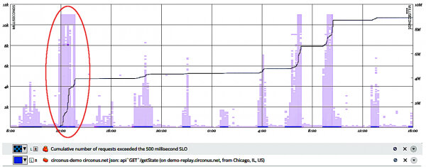
在此屏幕截图中，我们已经圈出了发生速度降低的热图的一部分。增加的延迟分布是相当缓慢的指示。图中的线表示受到一段时间影响的请求总数。
在这个例子中，我们设法错过了 400 万个请求的 SLI。哎呦。不明显的是右边的两个额外减速，因为它们幅度较小。每个这些花费我们额外 200 万 SLI 违规。哎哟。
我们可以对这些类型进行数学分析，因为我们将数据存储为分布，而不是像百分位数之类的聚合。
我们来考虑另一个常见问题。我的服务是否置备或配置过度？
答案通常“视情况而定”。根据一天中的时间和一周的日子，负载会有所不同，除了因特殊事件而变化之外。那是在我们甚至考虑系统在负载下的行为之前。让我们把一些数学工作，并使用延迟带来可视化我们的系统如何执行：
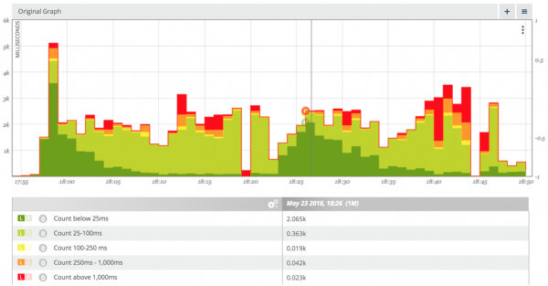
上面的可视化显示延迟分布随着时间的推移被延迟带分解。这里的频段显示 25ms 到 100ms，100-250ms，250-1000 和 1000ms 以下的请求数。快速的请求分组以绿色显示，请求速度的请求变慢以红色显示。
这种可视化告诉我们什么？它表明，对我们的服务的请求非常迅速地开始，然后几分钟后快速请求的百分比就会下降，大约 10 分钟后请求的缓慢百分比就会增加。这种模式重复了两次流量会话。那告诉我们关于配置的是什么？它表明，最初服务过度供应，但随后在 10-20 分钟的过程中供应不足。听起来像是做自动缩放的好机会。
我们也可以将这种类型的可视化添加到我们的 RED 仪表板。这种类型的数据对业务利益相关者来说非常好，而且它不需要大量的技术知识积累就可以用来了解对业务的影响。
结论
我们应该监控服务而不是容器。服务是长期存在的实体，而容器不是。您的用户不关心您的容器如何执行，他们关心的是服务运行的怎么样。
我们应该记录分布而不是聚合。我们应该从这些分布来产生聚合。聚集是非常有价值的信息来源。但它们无法合并，因此它们不适合进行统计分析。
Istio 免费提供了很多东西。您不必使用编写代码来实现。您无需从头开始构建高质量的应用程序框架。
通过数学提出并回答有关您的服务的问题，这对业务很重要。这就是全部，对吧？当我们可以通过回答对业务有价值的问题来使系统可靠时，我们就能实现组织的目标。